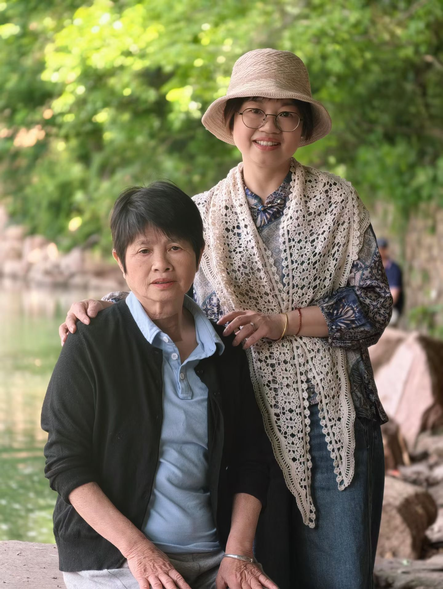
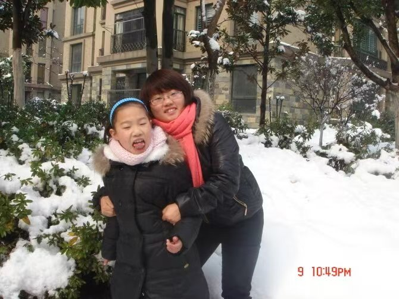
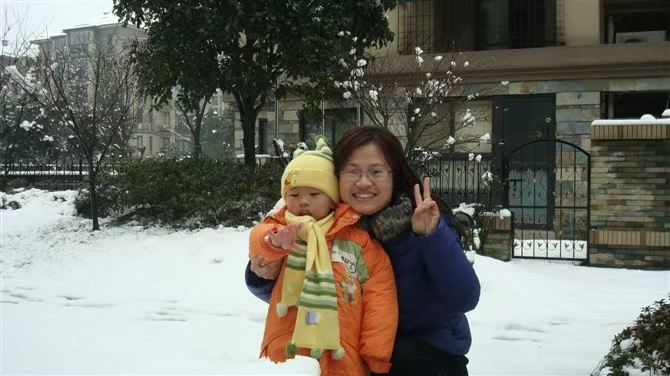
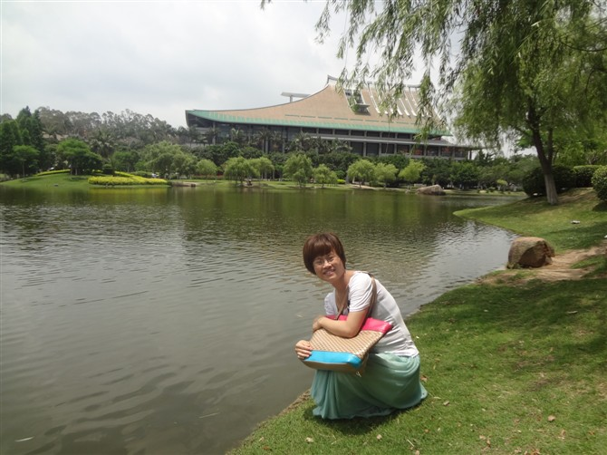
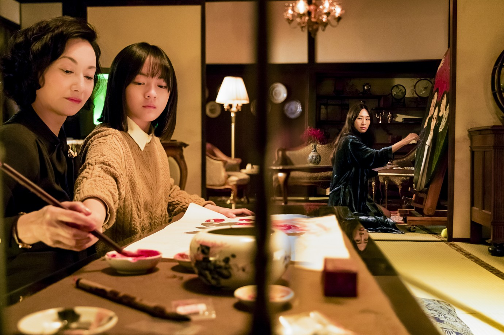
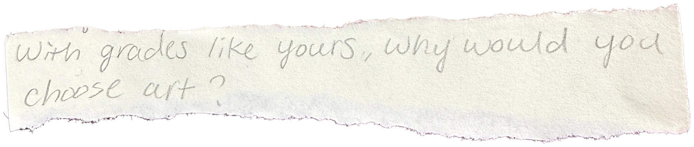

A SHAPE OF HER

(Interviews)

(Collected Words)
(Film & Book Studies)
(Research)


What do your family and your work expect from you these days? Does any of it feel stressful?
Right now, I think Mom’s job at home is to look after you and Niuniu. His college entrance exams are coming up, so I need to make sure he’s doing okay and staying healthy. With you, Mom needs to pay extra attention to how you’re feeling. I don’t want you to get ill again.
At work, I need to help Dad run the factory. Mom handles the office work and HR, and Dad wants me to learn more about it.
At home, we have the older ones and the younger ones to look after. Sometimes keeping up with everyday life and paying for everything feels like a lot. Mom was at home for so many years, and now I’m helping Dad manage the company. I worry about getting things wrong sometimes.
But overall, Mom is happy with life right now. You and Niuniu are both doing well, and he’s working hard. Especially you—you’re doing so well now. Seeing you get better makes Mom feel much less worried.
What part of your day matters most to you?
The most important part of the day? I don’t think there’s one particular time. When I wasn’t working, though, I liked making a nice dinner and waiting for Dad to come home. When you were all home too, we could sit down and have a happy meal together. That was the best time for Mom.
Now that you’re in America, our video calls are the most important time for me. Seeing that you’re doing well makes Mom so happy.
Who or what matters most to you?
The most important people in Mom’s life are you and Niuniu. Right now, you two matter most to me. For now, I want to help Dad run the factory well so we can earn a bit more money.
If you could go back to when you were younger, what would you do differently?
Mom wishes she could go back to when you were little. I would take better care of you so you could grow up happy, instead of losing my temper with you. I wouldn’t let you go abroad to study and go through so much hurt. Then you could have stayed healthy without needing medicine. You also wouldn’t have had such a hard time losing weight. That’s what Mom most wishes she could do over.
A SHAPE OF HER

(Interviews)

(Collected Words)
(Film & Book Studies)
(Research)


What do your family and your work expect from you these days? Does any of it feel stressful?
I’m very happy. What do you want me to say about expectations? Grandma doesn’t know. Let Grandpa answer. You want Grandma to say it? Then let Grandpa help me a little. How would I know? Pressure and expectations? Grandma feels very happy now. I don’t really have any pressure.
What part of your day matters most to you?
The most important part of the day? What does that mean? Well, apart from sleeping, the two of us make ourselves something to eat, don’t we? Just us two old people, making a little food. As long as we’re healthy, isn’t that enough? Keeping well, so you don’t have to worry about us. Isn’t that enough?
Who or what matters most to you?
The most important people and things? How is Grandma supposed to answer that? I just want to be healthy. Isn’t that enough? The most important people? All of you. You’re the most important, the very most important. Grandma’s getting so old now, isn’t she? Sometimes I can’t sleep, and I think about you all.
If you could go back to when you were younger, what would you do differently?
Start over? Even if I wanted to, I couldn’t do those things now. What could I do? Well, let me think, let me think. Ha ha ha. What would I want to do over now? Grandpa can’t think of anything either.
I regret marrying your grandpa.
Our village back home was such a lovely place. You’ve been there, you know. Grandma lost out, really lost out. I left such a lovely place and came to this awful place. I regret moving down here to the flatlands. The work wore me out. I was so tired.

A SHAPE OF HER

(Interviews)
(Collected Words)
(Film & Book Studies)
(Research)



What do your family and your work expect from you these days? Does any of it feel stressful?
I don’t have any family pressure because I don’t have a family of my own. It’s just me—as long as I’m fed, everyone’s fed. So there isn’t much expected of me. At work, I just try to be careful and do things properly. I try to make fewer mistakes and make sure the work gets done.
What part of your day matters most to you?
After a busy day, the most important time is when I can sit down for dinner with my family. We go for a walk afterwards to get some exercise. Then I get ready for bed and lie down to watch my shows.
Who or what matters most to you?
The most important people and things in my life? Definitely my family. You need good health before anything else. I just want a steady life, with the people I love and the people who love me all healthy and safe.
If you could go back to when you were younger, what would you do differently?
If I could go back to my childhood, I’d definitely study hard. I’d like to go back twenty years, to when I was young, and stick with my first job instead of quitting. I would listen more patiently to my elders.

A SHAPE OF HER

(Interviews)
(Collected Words)
(Film & Book Studies)
(Research)
What do your family and your work expect from you these days? Does any of it feel stressful?
At work, I’m expected to be responsible, do every task well, and create value for the company. The pressure comes from feeling that my own abilities aren’t enough, so I need to spend more time and energy learning. At home, I’m expected to spend more time with my family and take care of them.
What part of your day matters most to you?
After finishing work, I spend time with my family and chat with them.
Who or what matters most to you?
The most important people in my life are my family. What matters most is that they are safe and healthy.
If you could go back to when you were younger, what would you do differently?
I would study hard.



A SHAPE OF HER

(Film & Book Studies)

(Collected Words)
(Interviews)
(Research)


The Bold, the Corrupt,
and the Beautiful
2017 · Yang Ya-che · Taiwan
In Madame Tang’s family, care is linked to control. Protecting someone can also mean deciding how they should live. The two younger women have to figure out how much they can choose for themselves.
“It’s for your own good” can make it hard to disagree with someone who cares about you. When a woman relies on her family for her life, sometimes she will get comfortable with putting her own wishes aside as she lets go of them for the long term.
Raise the Red Lantern
1991 · Zhang Yimou · China / Hong Kong
After her father dies, Songlian leaves school and becomes the fourth concubine in a rich man’s household. The red lanterns show which woman is getting his attention and special treatment. Songlian has to learn how to gain his favour so that her life there is easier.
When being treated well relies on pleasing one person, it is hard to think only about what you want. The women compete with each other because they live under the same rules. Songlian can try to get the lanterns lit outside her room, but she can’t decide how the household is run.
In the Mood for Love
2000 · Wong Kar Wai · Hong Kong
Su Li-zhen and Chow Mo-wan feel close after they learn that their spouses are cheating. As they spend more time together, she begins to have feelings for him. But she is married, so she’s afraid of what others will say.
She is trying to understand herself while also being a good wife in other people’s eyes. At times she says nothing because she doesn’t know what she really wants. At other times she may be worried about what would happen if she said it out loud.

A SHAPE OF HER

(Interviews)

(Collected Words)
(Film & Book Studies)
(Research)
Being a good girl.
As a child, she may be praised for being a “good girl” when she stays quiet. After a while, speaking up can feel like doing something wrong, even when she has been treated unfairly. She may start doing what others want before thinking about herself.
Being looked at.
As she gets older, comments about her looks can affect how she feels about herself. She might choose her clothes just to avoid being criticised. It can become hard to tell what she actually likes and what she has learned to like because other people approve of it.
Choosing a direction.
Her choices about the future often depend on her family’s support. They may want her to get married by a certain age, even if she has other plans. Going her own way can make her feel that she is letting them down.
Making room for others.
She may enjoy looking after her family. But when everyone gets used to her help, they can forget that she has plans too. She keeps putting them off because something at home always seems to need her attention.
As she gets older, she can be happy with her life and still wonder what might have happened if she had chosen differently. Regretting a decision doesn’t mean she loves her family any less. Something she wanted years ago may still matter to her now.

A SHAPE OF HER

(Interviews)

(Collected Words)
(Film & Book Studies)
(Research)
Connecting the film
with REALITY
These films make me think of my own family.
The Bold, the Corrupt, and the Beautiful
I hear a lot of “it’s for your own good” at home. I know it might come from love, but there is very little room for disagreement. But listening to my mother and grandmother, I see that it is in fact to keep the family happy that they put their own wishes aside. I wonder if the advice they give me comes from what they were once told themselves.
Raise the Red Lantern
The lanterns remind me of rules at home that no one needs to say out loud. A woman might be praised for looking after everyone and not causing trouble. When my family talks about the past, I wonder how much choice they really had. This may have felt like a personal decision then, but it needed to be made. If she needed her family’s support, going against them may not have felt possible. Money could also limit what she was able to do.
In the Mood for Love
My grandmother says she regrets getting married, but I don’t think it signals that she doesn’t love her family. My mother would love to go back to when I was young and try different things then. I want to know these feelings, not tell them straight away they are fine. I don’t want to suppress these feelings.

A SHAPE OF HER


(Interviews)
(Collected Words)
(Film & Book Studies)
(Research)
How do changing social expectations shape Chinese women’s identities and choices throughout their lives?
NO. / YEAR
TITLE / RELEVANCE
AUTHOR / SOURCE / THEME
(01)
2002
Ye Liu
Sociology
58(1), 175–193
Published online 2023
IDENTITY / LIFE COURSE
Read original ↗
Virtues or Talent among Brotherless Daughters: A Study of How Patriarchal Gender Ideals Affect Gender Role Attitudes among Women from the One-Child Generation in China
Liu examines how educated women from the one-child generation respond to ideals of talent and feminine virtue as their circumstances change. It links the interviews’ questions about education, work and family to the expectations women negotiate throughout their lives.
(05)
2024
Rujun Yang
International Journal of
Comparative Sociology
64(5), 454–480
GENERATION / GENDER IDEOLOGY
Read original ↗
Mosaic of Beliefs: Comparing Gender Ideology in China across Generation, Geography, and Gender
Yang compares gender beliefs across generations, places and genders in China. The study gives context for differences among daughters, mothers and grandmothers, and reminds me to consider place and social circumstances as well as age.
(04)
2023
Lingsheng Meng
Yunbin Zhang · Ben Zou
Journal of Comparative Economics
51(1), 105–132
WORK / MOTHERHOOD / CARE
Read original ↗
The Motherhood Penalty in China: Magnitudes, Trends, and the Role of Grandparenting
Meng, Zhang and Zou connect childbirth with women’s employment and earnings, and examine the role of grandparents’ childcare. This makes care visible across generations, connecting the mothers’ working lives to the grandmothers’ family responsibilities.
(03)
2023
Sandy To
Symbolic Interaction
36(1), 1–20
MARRIAGE / CAREER
Read original ↗
Understanding Sheng Nu (“Leftover Women”): the Phenomenon of Late Marriage among Chinese Professional Women
To study how professional women negotiate marriage pressure from parents and potential partners while maintaining career ambitions. It allows us to read the interviews’ tensions between family approval, partnership and a woman’s own plans.
(02)
2013
Vanessa L. Fong
American Anthropologist
104(4), 1098–1109
EDUCATION / DAUGHTERHOOD
Read original ↗
China’s One-Child Policy and the Empowerment of Urban Daughters
Fong explores how investment in only daughters can expand educational opportunities and change gender expectations. It helps frame the interviews around what families make possible for daughters, and what they expect from them.

A SHAPE OF HER
(Collected Words)

02 / Childhood
Pressure from Family
03 / Childhood
Social Norms

05 / Adolescence
Pressure from Family
06 / Adolescence
External Gaze
08 / Adulthood
Pressure from Family
09 / Adulthood
External Gaze
(Interviews)
(Film & Book Studies)
(Research)
(Filter)
(LIFE STAGE)
(THEMES)
(PRESSURE / INFLUENCE)
Childhood
Adolescence
Adulthood
Later Life
Pressure from Family
External Gaze
Social Norms
Peer Pressure
School Expectations
Workplace Expectations
Media Influence
Self-Expectations
Obedience
Appearance
Body Image
Education
Ambition
Work
Money
Independence
Relationships
Marriage
Childbearing
Motherhood
Caregiving
Housework
Aging
Personal Choice